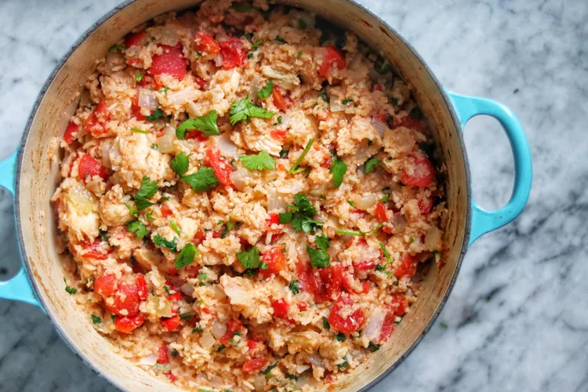

Cilantro Chicken Breasts

Description
Before I made this chicken breast recipe I had never cooked with cilantro. This is a great way to start. Now I am not afraid of sprinkling it into tacos, or any Mexican type of dish. This is also great to have for leftovers.
Ingredients
- 3 tablespoons olive oil, divided
- 1 ½ cups uncooked white rice
- 1 onion, chopped
Steps
- Preheat oven to 350 degrees F (175 degrees C).
- Heat 2 tablespoons oil in a Dutch oven over medium heat. Add rice and cook until golden, 5 to 10 minutes. Transfer toasted rice to a bowl.